Prelab
In the prelab I read through the datasheet and manual for the VL53L1X ToF sensor.
I don't want to have to continuously turn on and off the ToF sensors, so I will just change the address of one of them at the beginning. I will do this by using the built in .setI2CAddress() function. By turning off the other ToF sensor and then setting the I2C address of the one that is on, I can set the I2C address. I can turn the ToF sensor on and off with the XSHUT pin on the sensor and the a0 pin on the arduino.
To get the best picture of the environment, I will place one sensor at the front, and one on the right. This way, I can detect what is in front of the robot and what is at the side. I don't need a sensor at the rear since I expect to only be moving forward, and knowing what is to my right can help me know if there is an obstacle to my right. This does mean I will be blind on my left side, but I only have two sensors, so I just chose the right side.
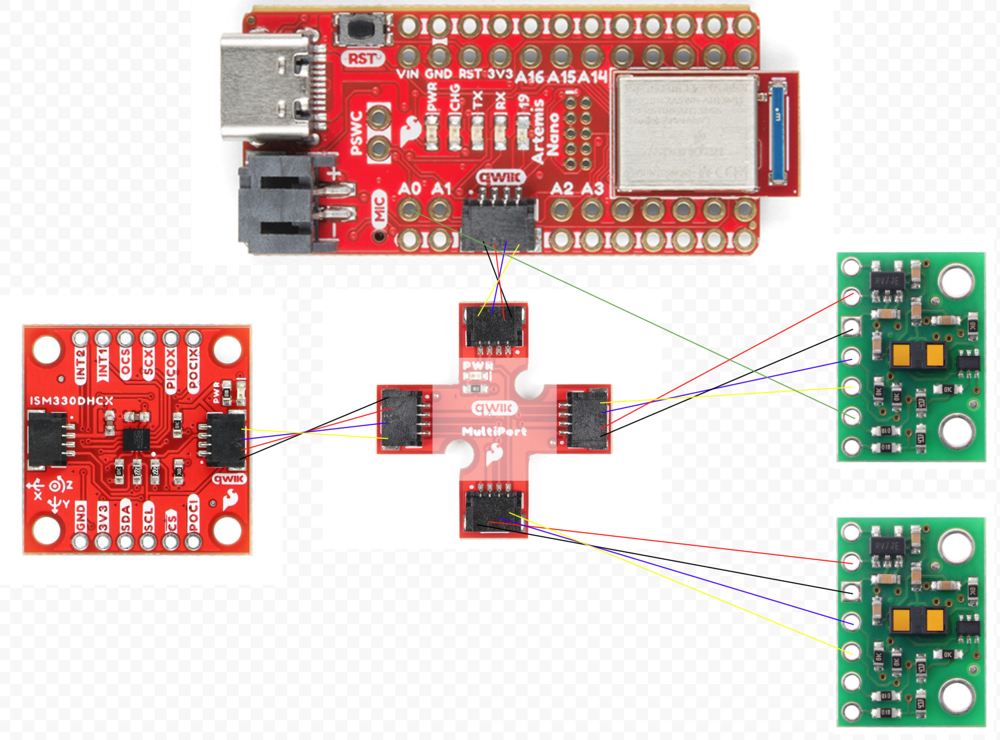Battery Powered Artemis
I had to use opposite colors because when the red wire on the battery is positive, but the red wire on the JST connector is negative.
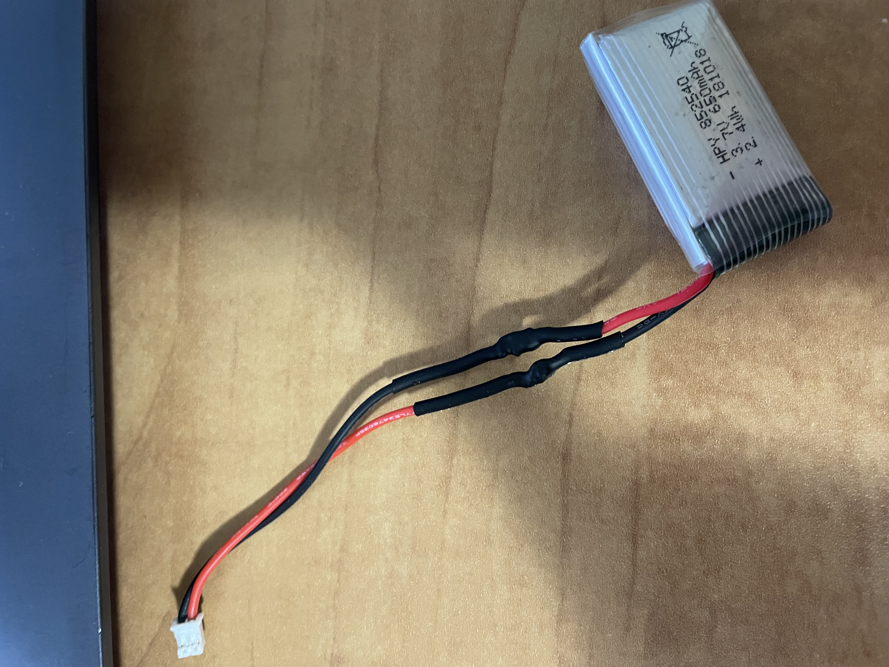ToF Sensor Wiring
On this ToF sensor, I also soldered the XSHUT pin wire. I used the datasheet to know that the blue wire should go to the SDA line and the yellow wire to the SCL line.

The datasheet says that the default I2C address is 0x52, but running Exampl05_wire_I2C said the device was at 0x29. 0x52 is 0b1010010 and 0x29 is 0b101001. 0x52 is just shifted right one bit to get the address of 0x29 because the least significant bit of 0x52 is used to set read or write which means the actual bits for the address is 0x29.

ToF Sensor Testing
I chose the short range mode since 1.3 meters seemed like a large enough distance to get a good sense of the environment. The short range mode also provides better readings with sunlight and noise compared to the long range mode. I don't think I'll need anything more than 1.3 meters, so I am sticking with short range mode.
the image below is my testing setup, using a large 90 cm ruler to measure distance. I taped the sensor to a rubber block and then on top of a soap box. I used the robotics box as the target to measure distance.
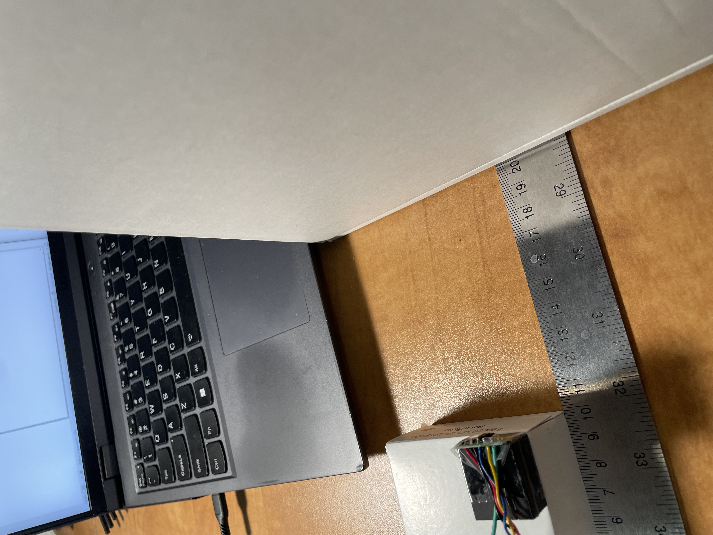The data below is from 10 samples each at 100, 200, etc. millimeters in distance compared to the actual distances collected at those distances. the data is very close to the real distances and some of the differences could just be from measuring error in the setup.
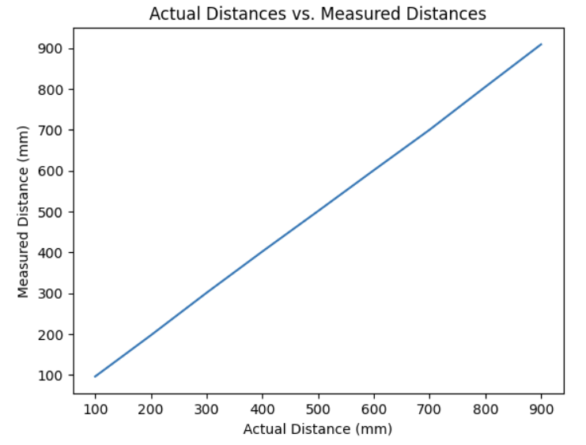Readings for the ranging time were surprisingly consistent. All readings with .stopRanging had a 51 ms time. All readings without .stopRanging had a 100 ms time. This might be because of the 100 ms default timing budget, but I am uncertain. The code below is how I timed it.
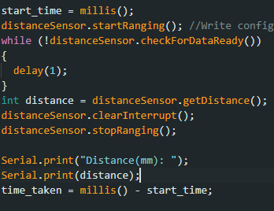Second ToF Sensor
I wired an additional wire to the XSHUT pin and the a0 pin on the arduino, to shut off the sensor so I could change the address at the beginning of the script.
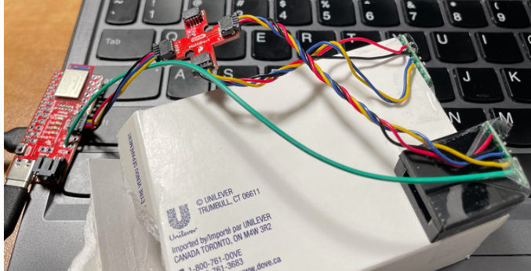 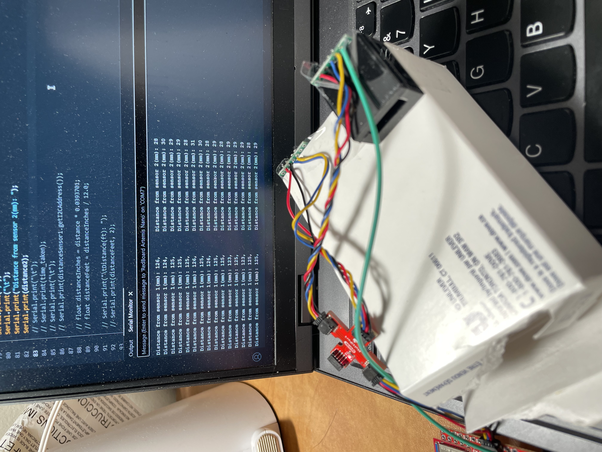
Loop Execution
The code below doesn't let my code hang while it waits for the sensor to finish a measurement.

In the image below, you can see that my code has an initial loop time of around 16-17 ms when it actual gets the sensor data and prints it out. I suspect that the larger time is due to the print statements slowing down the loop. When there is no data available, the loop takes 6-7 ms. The current limiting factor is the print statements and turning the ranging on and off.
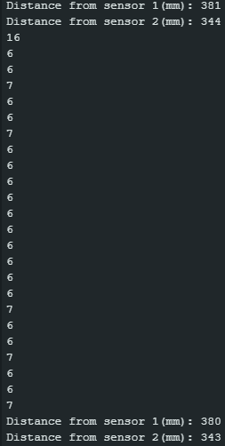ToF and IMU Data Over Bluetooth
I added 3 commands to the bluetooth code from lab 1.
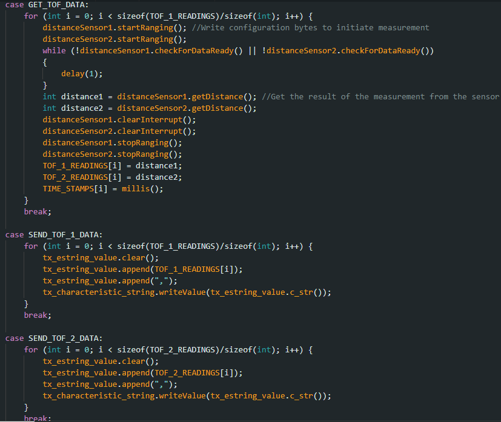ToF data against time:
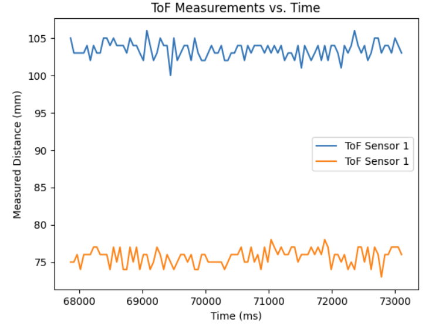IMU data against time:
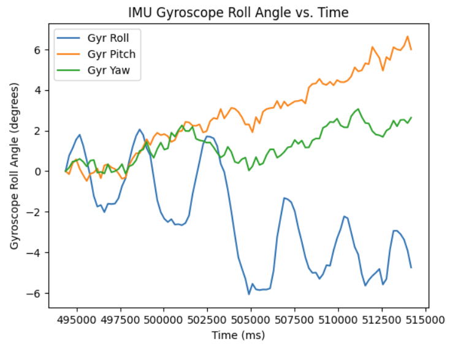References
I referenced Aidan Derocher's website for how to use two ToF sensors, and how the I2C addresses worked.